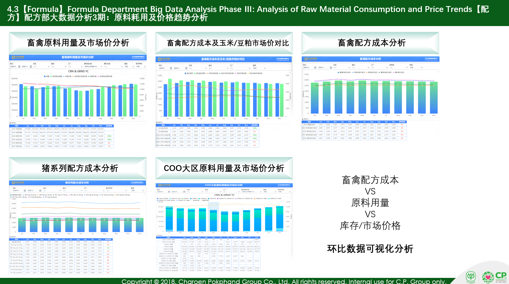
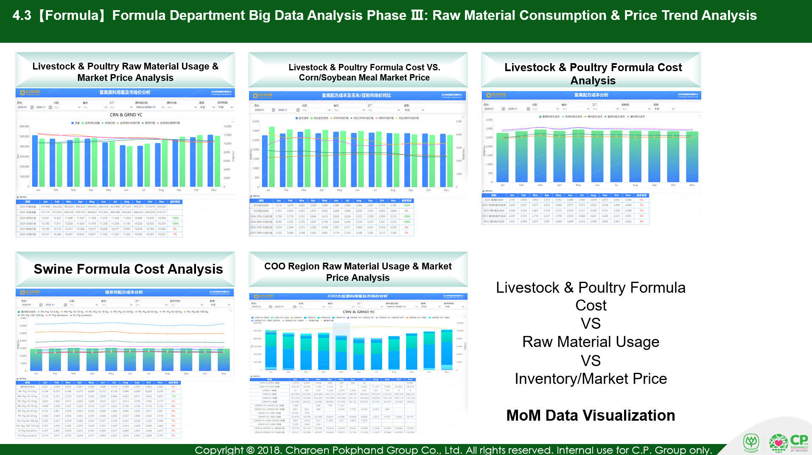

以下为中英双语版同页 PPT 的对比示例：图表、数据表格与整体布局保持一致。


普通翻译手动复制粘贴，耗时低效；PPT 文档翻译一键转英文，自动排版。
不是逐词替换——而是一个理解版式、排版和领域术语的翻译引擎。
通过像素级测量自动适配字号，文本绝不溢出——宽度和高度均经过模拟自动换行验证。
同时在 Latin、East Asian、Complex Script 三个字体槽位设置 Arial，防止 PowerPoint 回退到主题字体。
上传 Excel 术语表，引擎将其与内置专有名词词典合并，采用最长匹配优先策略。
递归处理组合形状、表格和嵌套元素——不仅仅是顶层形状。不遗漏任何文本。
标签使用 Title Case，段落使用 Sentence Case，保留缩写原样（AI、PhD、COO）。自动遵循芝加哥格式规范。
每份输出都会检查残留中文字符和文本溢出——宽度和模拟换行高度双重校验。确保结果干净可靠。
内置专有名词词典，精准处理通用翻译器容易出错的企业专有名称。还可上传自定义 Excel 术语表，进一步扩展覆盖面。
| 中文 | 英文 |
|---|---|
| 正大研究院 | CPRI |
| 正大投资股份有限公司 | CP Investment Co., Ltd |
| 数字创新中心 | Digital Innovation Center |
| 猪博士APP | Dr. Swine |
| 生产一区 | Area I |
提供待翻译的 .pptx 文件路径，并指定翻译方向（中→英或英→中）。
可选上传 Excel 或 JSON 格式术语表，与内置专有名词词典合并使用。
自动完成翻译、字号适配与质量校验，输出可直接使用的翻译版 PPT。